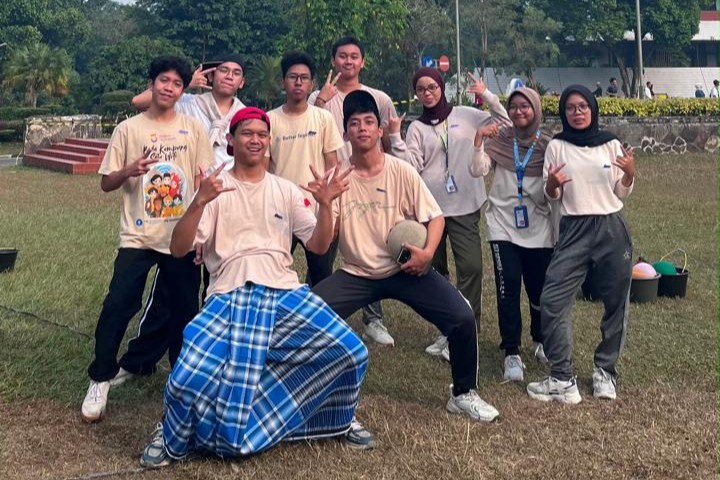
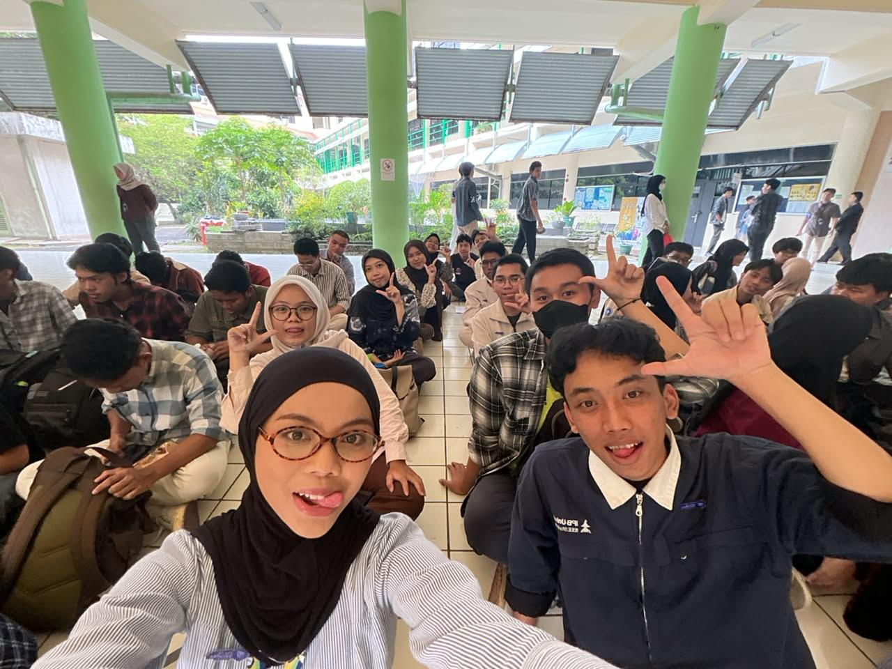
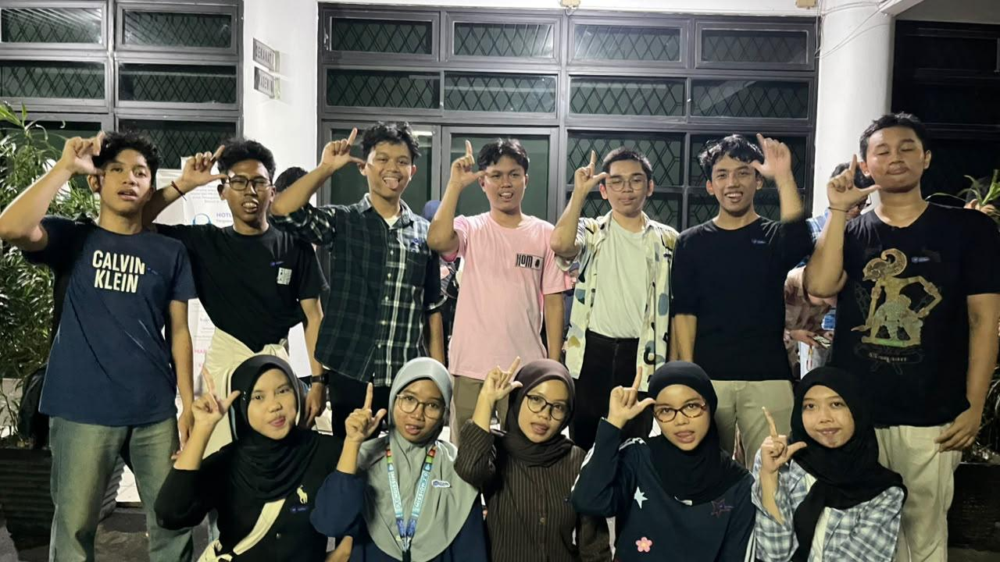
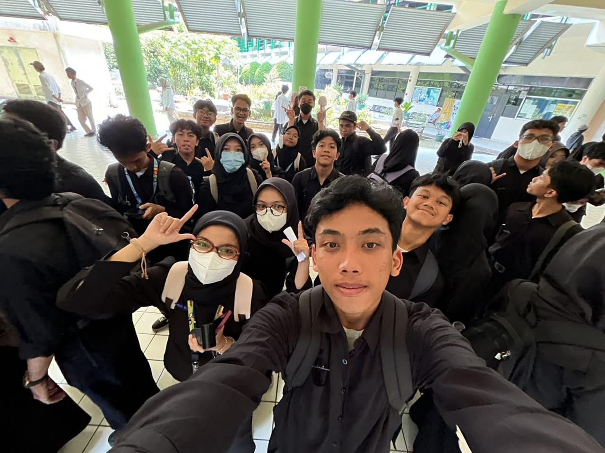
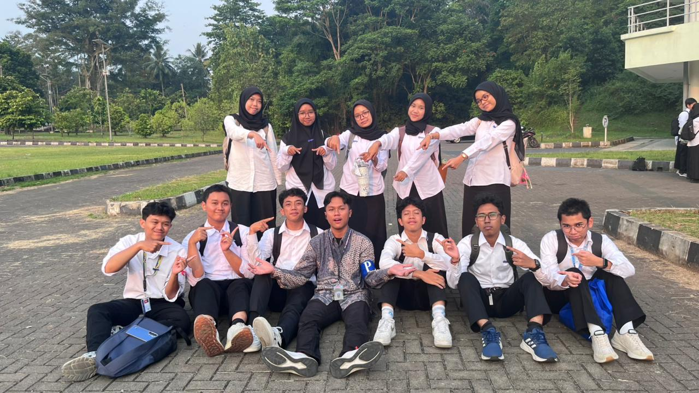
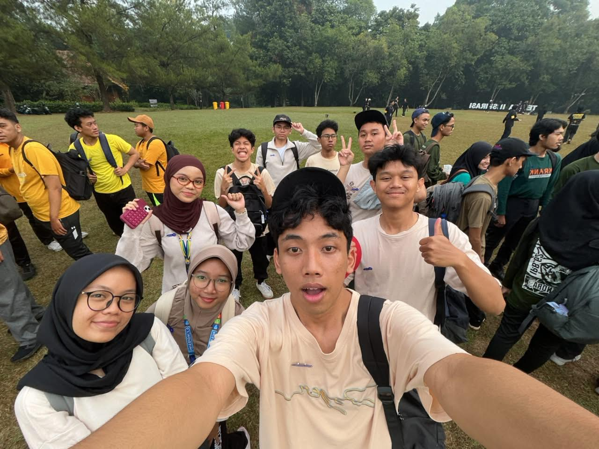
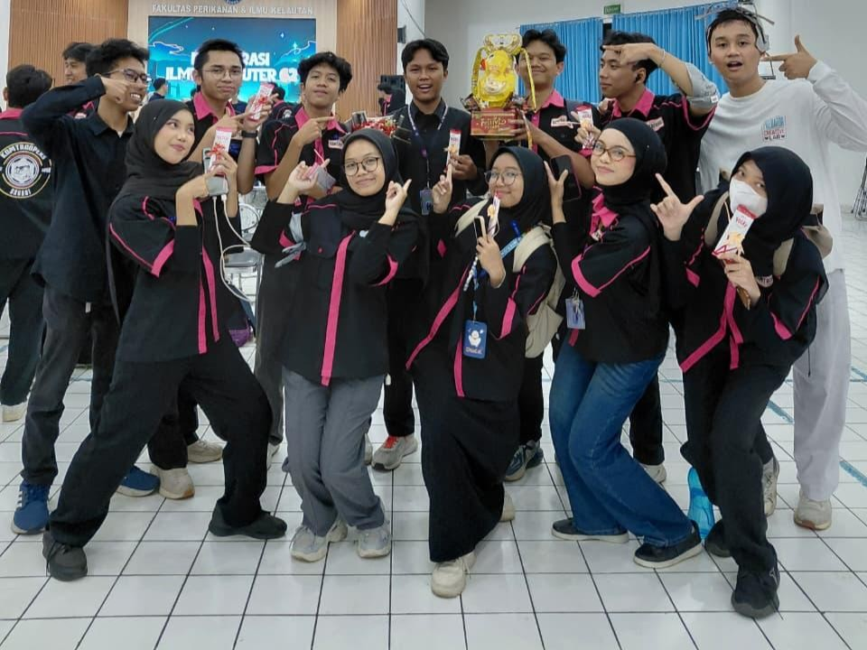
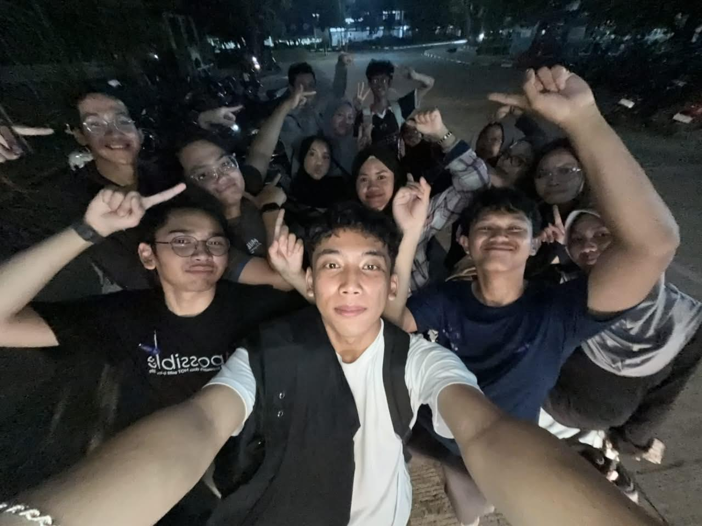

GALERI DOKUMENTASI








“Every picture holds a story, every moment became a memory, and every memory became part of us.”








“Every picture holds a story, every moment became a memory, and every memory became part of us.”